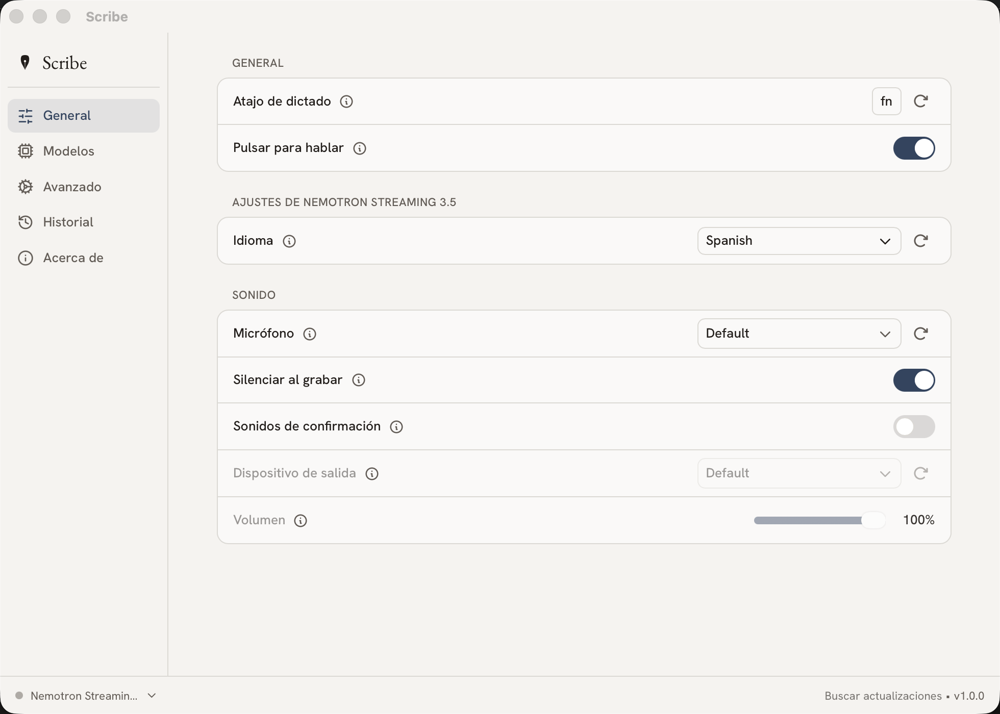

Habla.
Ya está escrito.
Scribe convierte tu voz en texto en cualquier aplicación de tu Mac o de tu PC. Pulsas un atajo, dices lo que piensas y sigues a lo tuyo. Sin nube. Sin cuota mensual. Sin ruido.
Early access: hoy gratis · después 19 €, una sola vez · para siempre
Todas las descargas — Mac Intel, Windows ARM y Linux incluidos
Esto no lo he tecleado: lo he dicho en voz alta.
Pulsa
Un atajo global, el que tú elijas. Scribe espera en la barra de menús, callado, sin ocupar sitio.
⌥espacio
Habla
En español, en inglés, o mezclando los dos sin avisar. La puntuación se pone sola.
Sigue
El texto aparece donde estaba el cursor: tu correo, tu editor, ese WhatsApp Web. Cualquier app.
Tu voz no sale
de tu ordenador.
No porque lo prometamos: porque no hay servidor al que enviarla. La transcripción ocurre en tu máquina, con modelos que viven en tu disco.
- Cero nube Funciona igual con el wifi apagado. Pruébalo en modo avión.
- Código abierto Auditable línea a línea. La privacidad no se promete: se comprueba.
- Sin cuenta Ni registro, ni email, ni analítica. Descargas, abres, hablas.
Una app de dictado que no
parece una app de dictado.
Porcelana, tinta y nada más. Scribe se disuelve en tu escritorio: lo único que ves es una píldora discreta cuando hablas, y tus palabras apareciendo donde tienen que aparecer.

- Español e inglés de fábrica, y más de veinte idiomas con los modelos Whisper
- Historial local de todo lo dictado, con su audio
- Modelos a elegir: rápidos para notas, grandes para textos serios
- Nativa en Apple Silicon y en Windows
19 € una vez
Se compra como se compraba el software: una vez, y es tuyo. Actualizaciones de la 1.x incluidas, hasta tres ordenadores, sin cuenta.
- Wispr Flow144 $ al año, cada año
- Superwhisper249 $ el «lifetime»
- Scribe19 € y ya está
Semana de lanzamiento: descárgalo hoy gratis. Los early adopters no pagarán la 1.x nunca. Sin trampa: queremos tus quejas, no tu tarjeta.
Descargar ScribeLo que preguntarías
antes de instalarlo.
¿De verdad es gratis hoy?
Sí. Durante el lanzamiento, Scribe es gratis: descárgalo y es tuyo. Cuando activemos la venta (19 €, pago único), los que llegasteis primero seguiréis sin pagar la 1.x. Preferimos mil usuarios exigentes hoy que cien clientes callados mañana.
macOS dice que no puede abrir la app
Clic derecho sobre Scribe.app → Abrir → Abrir. Solo la primera vez. Aún no hemos pagado el peaje del certificado de Apple (99 $ al año); la app es exactamente la misma con o sin él, y está en camino.
¿Qué pasa con mi voz?
Se transcribe en tu máquina y se queda en tu máquina. Scribe no tiene servidores, ni cuentas, ni analítica. Si quieres comprobarlo: apaga el wifi y sigue funcionando igual. O léete el código, que está publicado.
¿Qué necesito?
Un Mac (Apple Silicon o Intel, macOS 10.15 en adelante) o un PC con Windows 10/11. Y unos 2 GB de disco para el modelo de voz, que se descarga la primera vez.
¿Dicta bien en español?
Es su idioma de casa. Acentos, eñes, signos de apertura, code-switching al inglés a mitad de frase: para eso lo hemos hecho. Los modelos Whisper y Parakeet que usa Scribe están entre lo mejor que existe para el español.
¿No es esto un fork de Handy?
Lo es, y a mucha honra. Scribe está construido sobre Handy (MIT), de CJ Pais — gracias, CJ. Nosotros ponemos el diseño, el español, el onboarding y el soporte. El código sigue siendo abierto; si prefieres el original, adelante.